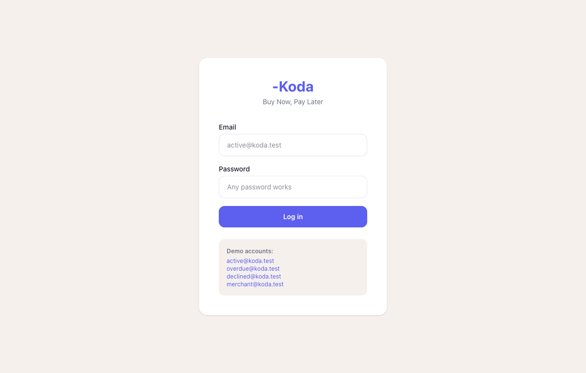
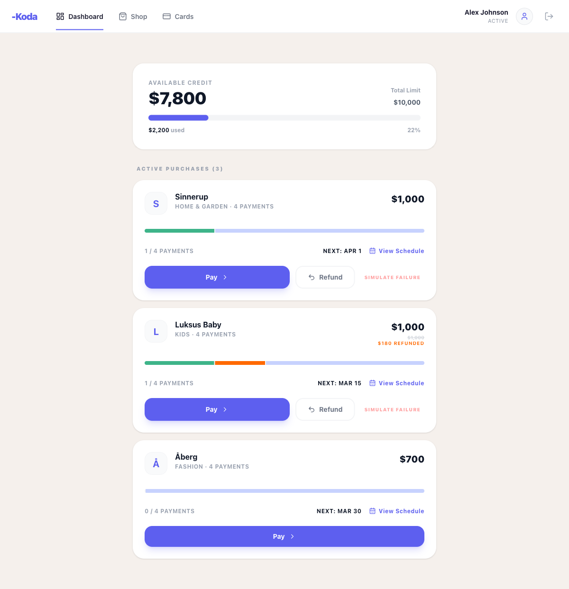
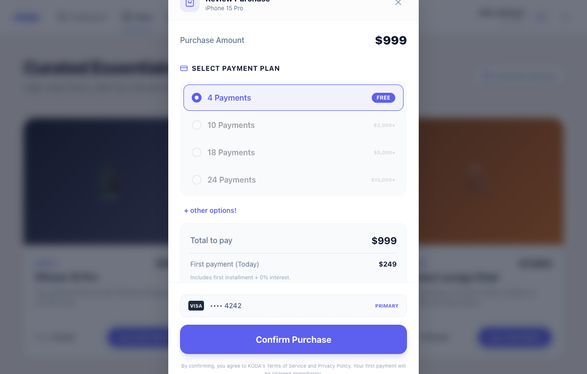
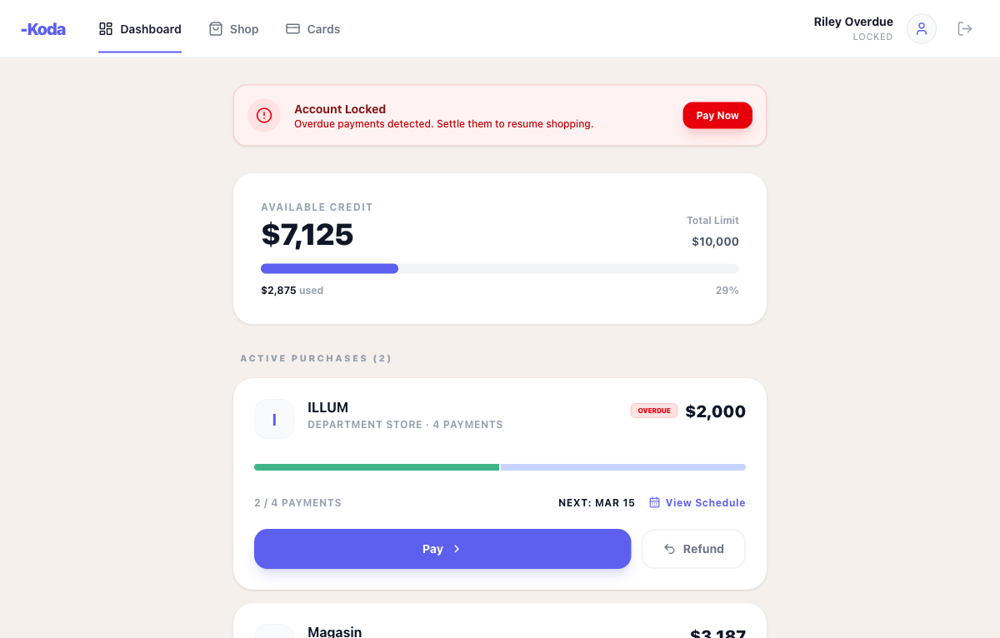

Most QA portfolios demonstrate testing skills on someone else's app. I wanted to go further —
so I built KODA from scratch: a fully functional Buy Now, Pay Later service
with a real checkout flow, installment logic, risk rules, and edge-case account states.
That gave me something worth testing. I then applied a complete QA cycle on top of it —
from structured test planning, through 104 hand-written manual test cases, all the way to
Playwright automation and a three-gate CI/CD pipeline that runs on every pull request.
The result is a project that demonstrates the full testing lifecycle,
not just the ability to write a script.
Four phases — from planning to automation to CI/CD.
Defined scope, priorities, test objectives, and risk areas before writing a single test case. The plan identifies 9 modules and assigns P1/P2/P3 priority to each based on business impact.
📄 tests/test-plan/test_case_progress.md104 test cases written by hand across 9 modules — covering happy paths, edge cases, error states, and security guards. Each case has preconditions, steps, and expected results.
📁 tests/manual-cases/73 of the 104 cases are automated with Playwright E2E tests (atomic 1-test-per-file structure) and Vitest unit tests for business logic. P1 modules (auth, checkout, risk) are 100% automated.
📁 tests/e2e/ — E2E specs 📁 app/tests/unit/ — Unit testsGitHub Actions runs three quality gates automatically on every pull request — lint + type check, unit tests, and E2E tests. Results are posted as a comment directly on the PR.
⚙️ .github/workflows/ci.yml9 modules · 104 manual cases · 73 automated · P1 critical paths = 100%
| Priority | Module | Manual Cases | Automation | Coverage |
|---|---|---|---|---|
| P1 | Auth | 23 | 23 / 23 | |
| P1 | Checkout | 27 | 27 / 27 | |
| P1 | Risk | 18 | 18 / 18 | |
| P2 | Payment | 11 | 3 / 11 | |
| P2 | Credit | 9 | 4 / 9 | |
| P2 | KYC | 3 | 0 / 3 | |
| P3 | Cards | 3 | 0 / 3 | |
| P3 | Merchant | 6 | 1 / 6 | |
| P3 | Schedule | 4 | 2 / 4 | |
| Total | 104 | 73 / 104 | ||
Every pull request to main triggers three automated quality gates in parallel.
GitHub Actions kicks off automatically — no manual steps needed
ESLint catches code style issues. TypeScript compiler confirms all types are correct — no silent bugs.
eslint + tscVitest runs fast isolated tests on the business logic — fee calculations, refund math, state transitions.
vitestPlaywright boots the full app and runs 73 end-to-end tests simulating real user flows in Chromium.
playwrightTest counts, pass/fail status, and a link to the full HTML report — visible to any reviewer without leaving GitHub
KODA is a fully functional BNPL prototype — all screens are live and interactive.




Node.js v22 required. All commands run from the repo root.
# Install dependencies and start the dev server cd app npm install npm run dev
# Run all unit tests (fee calculations, refund logic, state) cd app && npm run test # Run a single test file cd app && npx vitest run tests/unit/RefundEngine.test.ts
# Install Playwright browsers (first time only) npx playwright install chromium # Run all E2E tests (auto-starts the dev server) npx playwright test # Open the interactive UI mode npx playwright test --ui # Run a single spec npx playwright test tests/e2e/auth/login-valid-email.spec.ts
| What | Where | Description |
|---|---|---|
| Test Plan | tests/test-plan/ |
Module priorities, coverage progress, scope definition |
| Manual Test Cases | tests/manual-cases/ |
104 test cases across 9 modules (auth, checkout, risk, …) |
| E2E Automation | tests/e2e/ |
Playwright specs — 1 file per test case, atomic structure |
| Unit Tests | app/tests/unit/ |
Vitest tests for fee logic, refund engine, state transitions |
| CI/CD Config | .github/workflows/ci.yml |
GitHub Actions — 3 jobs: lint, unit, E2E |
| App Source | app/src/ |
React app — components, store, pages, hooks |
| Page Object Model | playwright/pages/ |
Reusable page objects for cleaner E2E tests |
| Test Accounts | account.check.md |
8 mock users — each triggers a different app state |